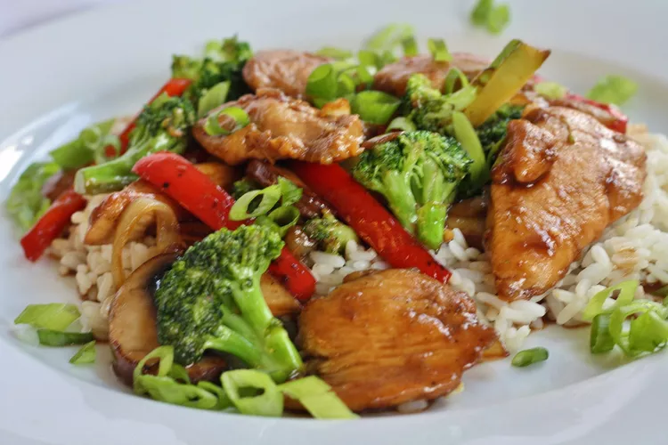

Easy Stir-fry

Recipe taken from allrecipes.com which you can visit here. Used for learning.
Recipe Details
Stir-frying is quick, easy, and extremely versatile. Once you know the basics behind putting together a great stir-fry, you can easily introduce new ingredients, make a variety of sauces, or try traditional stir-fry recipes like Kung Pao Chicken or Beef with Broccoli.
Learning how to make a super easy stir-fry is a skill that will get you through some of your biggest challenges in the kitchen. We'll share the basics behind deliciously fast stir-fry dinners.
Ingredients
- 1 lb. chicken, beef, or pork cut into bite sized pieces
- 2 lbs. vegetables, cut into bite sized pieces
- 1 tbsp aromatics, such as garlic, ginger, or shallots
- 2 tbsp chopped fresh herbs, such as basil or cilantro
- Basic Stir Fry Sauce
Steps
- et a large wok or frying pan over medium-high heat and allow it to get screaming hot. Swirl in 2 Tablespoons of oil (1 Tablespoon if using a non-stick pan).
- Add your meat and cook until browned on each side (cooked thoroughly if using chicken or pork). Remove the meat from the pan and set it aside.
- Transfer the densest vegetables (i.e., those that take the longest to cook, such as carrots, broccoli, cauliflower, green beans, or bell peppers) into the pan and cook for 1 minute.
- Add in any quick-cooking vegetables (snap peas, onions, celery, baby corn, snow peas, mushrooms, zucchini, or bok choy) and cook for another minute.
- Add in any aromatics, if using. Cook for 30 seconds, moving them around the pan constantly to avoid burning.
- Return the meat to the pan and pour in the sauce. Toss well to coat all of the meat and vegetables. Let cook for one minute until bubbling.
- Turn off the heat and stir in any fresh herbs, if using.
- Serve hot with a side of cooked rice or noodles.